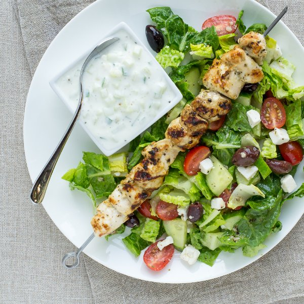

Chicken Kebabs with Greek Salad & Tzatziki Sauce

Total Time
40 min
Nutrition (Per Serving)
540.8 kcalCalories
39.3 gProtein
18.3 gCarbs
35.4 gFat
Full nutrition table
| Calories | 540.8 kcal |
| Total fat | 35.4 g |
| Saturated fat | 7.9 g |
| Trans fat | 0.3 g |
| Cholesterol | 111 mg |
| Sodium | 641.4 mg |
| Carbohydrates | 18.3 g |
| Fiber | 5.5 g |
| Sugars | 8.5 g |
| Protein | 39.3 g |
| Potassium | 1181.2 mg |
| Calcium | 297 mg |
| Iron | 3 mg |
| Vitamin A | 836.8 IU |
| Vitamin C | 24.2 mg |
| Vitamin D | 5.7 IU |
Cookware
Ingredients
- 1 lbchicken breasts, boneless skinless
- 1 (4 oz) pkgcrumbled feta cheese
- 1English cucumber
- 6 clovesgarlic
- 1 pintgrape tomatoes
- ½ cupKalamata olives, pitted
- 1lemon
- 1 cupplain Greek yogurt
- 1 headromaine lettuce
- black pepper
- extra virgin olive oil
- oregano, dried
- red wine vinegar
- salt
Steps
- Peel and mince the garlic.4 cloves garlic
- In a small bowl, whisk together the minced garlic, lemon juice, olive oil, vinegar, oregano, salt, and pepper.juice of ½ lemon
6 tbsp extra virgin olive oil
2 tbsp red wine vinegar
1 tsp oregano
1 tsp salt
1 tsp black pepper - Cube the chicken and transfer to a medium bowl. Pour half of the dressing over top (save the rest for the salad) and toss to coat.1 lb chicken breasts, boneless skinless
- Heat a grill pan, outdoor grill, or skillet over medium-high heat.
- Thread the chicken onto 4 skewers. Alternatively, you can cook the chicken pieces directly on the grill/skillet without using skewers.
- Add the chicken to the grill or skillet and cook, turning occasionally, until cooked through, 8-10 minutes.
- Wash and dry the fresh produce.1 head romaine lettuce
1 English cucumber
1 pint grape tomatoes - Finely dice ¼ of the cucumber. Peel and mince the remaining garlic. In a small bowl, prepare the tzatziki sauce by mixing together the cucumber, garlic, lemon juice, yogurt, and salt.2 cloves garlic
juice of ½ lemon
1 cup plain Greek yogurt
½ tsp salt
½ tsp black pepper - Halve the lettuce lengthwise, then chop crosswise into 1 inch strips; transfer to a salad bowl. Quarter the remaining cucumber lengthwise, then cut crosswise into chunks; add to the bowl. Halve the tomatoes; add to the bowl.
- Add the olives, feta, and reserved dressing to the salad and toss.½ cup Kalamata olives, pitted
1 (4 oz) pkg crumbled feta cheese - To serve, place salad on a plate and add a chicken skewer on top. Serve with tzatziki sauce and enjoy!